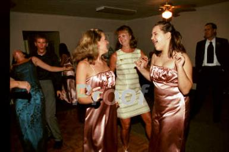
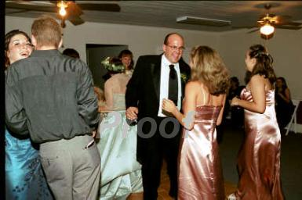

<!--#include virtual="../include/top.html" -->
			
<a href="../back.html" onMouseover="window.status='back to the previously viewed page'; return true" onMouseout="window.status=''; return true">back</a>
<br>
<br>
<table border="0" cellpadding="0" cellspacing="0">
<tr>
<td align="center">

<br>
<br>
</td>
</tr>
</table>
<!--#include virtual="../include/indexbottom.html" -->
